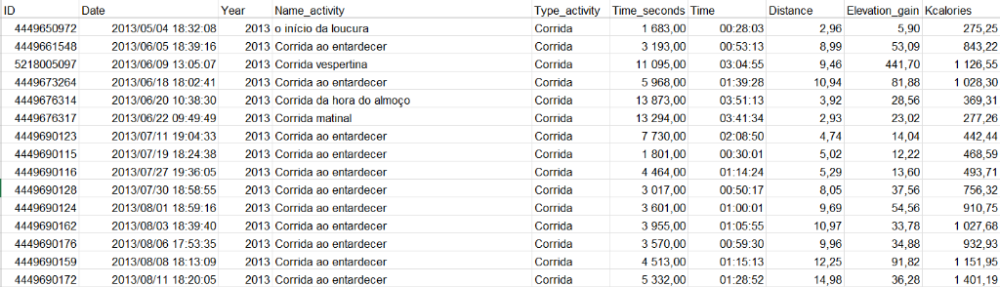

Project Overview
The UTMB (Ultra-Trail du Mont-Blanc) is the most prestigious trail race in the world. To finish it, athletes must cover 171 kilometers with over 10,000 meters of elevation gain around Mont Blanc, crossing Italy, Switzerland, and France within a 46.5-hour cutoff.
I started trail running in 2016, though I have been logging all my training data on Strava since 2013. Completing my first 100 km race sparked the ambition to train for the UTMB. In 2022, I crossed the finish line in 40 hours and 43 minutes. Having achieved my dream race, I decided to analyze my training data to see what it took to get there.
I exported all my training data from Strava. After cleaning the dataset using Microsoft Excel, I analyzed it using Microsoft Power BI.
